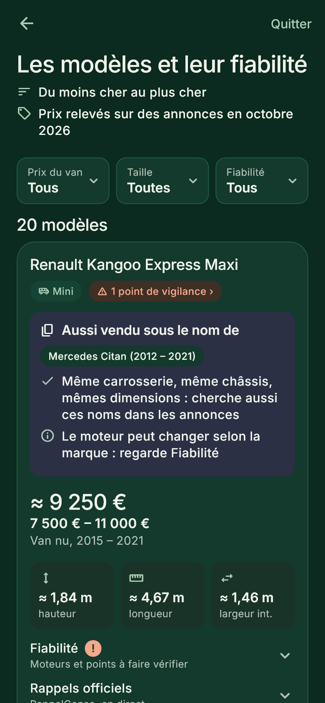

Choisir
Le bon van d'occasion, sans mauvaise surprise
Quelques questions sur ta vie à bord, et l'app te montre les vans qui te vont, avec leur prix et ce qu'il faut surveiller.
- 20 modèles, des petits vans aux grands fourgons, avec leurs dimensions.
- Des prix relevés sur de vraies annonces, comptées et datées.
- La fiabilité moteur par moteur, avec les points à faire vérifier avant d'acheter.
- Les rappels officiels du site RappelConso, en direct.
- « Aussi vendu sous le nom de » : le même van sous une autre marque, pour élargir ta recherche.
- Ton van est immatriculé en Allemagne ? Les annonces, les rappels du KBA et les contrôles à l'achat suivent ton pays.
